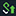

Pulse トレイ アイコンの使用と接続ステータスの表示
Pulse トレイ アイコン は、ネットワーク接続の現在の状態を示します。現在の接続が複数あっても、トレイに表示される接続アイコンは 1 つです。アクティブな接続のいずれかに問題がある場合は、システム トレイ アイコンの状態が変わります。接続のステータスは次の各アイコンで表示されます。
接続がありません。 | |
接続中。失敗または成功するまで、接続はこの状態を維持します。 | |
中断中。 | |
接続に問題があります。 | |
接続は失敗しました。 | |
 | 接続済み。 |
| ローカル ネットワークに接続していますが、インターネットにはアクセスできません。パブリック WiFi ロケーションには、多くの場合、キャプティブ ポータルが展開されており、ユーザーがネットワークへのアクセスを承認されるには、認証情報の入力または条件の同意が必要です。Pulse がキャプティブ ポータルの存在を検出すると、インターネット アクセスが承認されるまで Pulse サーバーへの接続は開始されません。 |
以下のアクションの実行に Pulse トレイ アイコンを使用することもできます。
- [Open Pulse Secure client] (Pulse を開く) - Pulse インターフェイスを表示します。
- [Pulse Collaboration] - Pulse Collaboration Suite のミーティング機能にアクセスします。この項目は、Pulse 管理者が Pulse Collaboration を有効にしている場合にのみ表示されます。
- [Connection List] (接続リスト) - 各 Pulse 接続を一覧表示します。接続名をクリックすると、その接続で実行可能な次のアクションが表示されます。
- [Connect] (接続) - 接続を開始します。
- [Disconnect] (切断) - 選択したネットワーク接続を切断します。
- [Cancel] (キャンセル) - Pulse サーバーによって開始された操作をキャンセルします。サーバーで Host Checker 操作を開始すると、[Cancel] (キャンセル) オプションが使用可能になります。アクションを中止すると、Pulse からネットワークには接続しません。
- [Suspend] (中断) - VPN 接続を中断して、ローカル ネットワーク リソースにアクセスできるようにします。アクティブな接続があるときに [Forget Saved Settings] (保存した設定を破棄) を選択すると、このオプションは使用できません。
- [Resume] (再開) - 中断している VPN 接続を再開します。
- [Extend Session] (セッションの延長) - セッションの期限切れに関する Pulse からの通知がまだないタイミングでも、セッションを延長できます。いつでもこのオプションを選択して、セッションとアイドルの残り時間タイマーを最大値にリセットできます。
- [Exit] (終了) - Pulse を閉じて、アクティブな接続をすべて切断します。